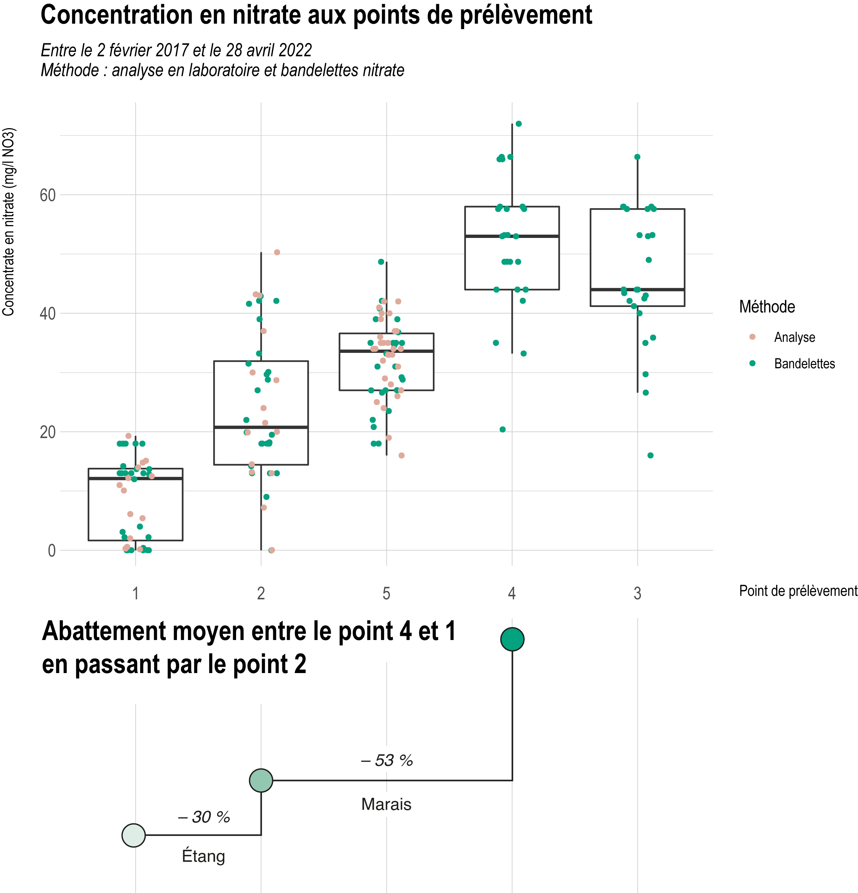
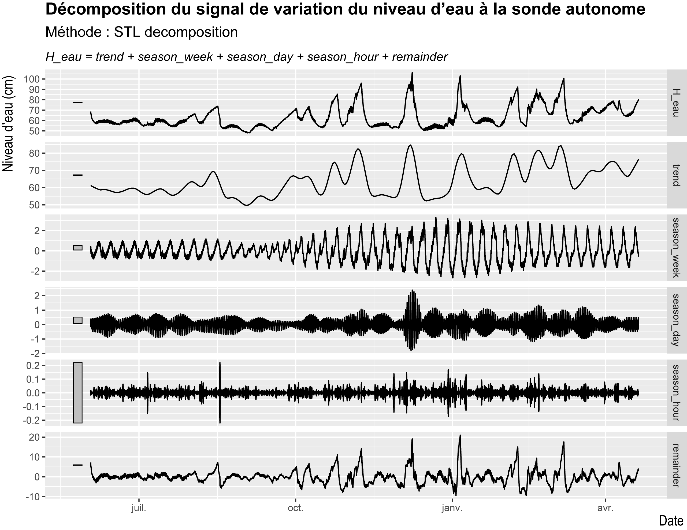

10 Présentation de l’étude étang COPIL
10.1 Quelques résultats
L’ensemble des protocoles décrit par Marie permettent de d’acquérir un certain nombre de données que l’on peut résumer dans le tableau ci-dessous :
| Thématiques | Outils | Indicateurs |
|---|---|---|
| Propriété physico-chimique de l’eau |
|
|
| Hydrodynamique |
|
|
| Contexte physique de l’étang |
|
|
| Contexte physique du marais |
|
|
| Contexte climatique |
|
|
| Diagnostic loutre |
|
|
| Diagnostic avifaune |
|
|
Les protocoles et études à venir :
| Thématiques | Outils | Indicateurs |
|---|---|---|
| Diagnostic piscicole (en juin) |
|
|
Les protocoles et études à venir souhaitées :
| Thématiques | Outils | Indicateurs |
|---|---|---|
| Évolution des milieux |
|
|
10.1.1 Un point sur les nitrates
Les flux de nitrate ont un rôle important dans les processus d’eutrophisation. Il ne faut cependant pas oublier les interactions entre les différentes composantes de l’écosystème lagunaire et ces nitrates. La concentration en nitrate n’est pas le seul paramètre à prendre en compte dans la compréhension du phénomène d’eutrophisation,c’est pourquoi des données sur d’autres paramètres physico-chimique ont également été collectées (cf. tableau).
Il sera donc très important de prendre en compte les nombreuses interactions que les nitrates entretiennent avec leur environnement.
Il nous paraît tout de même intéressant de présenter quelques résultats sur le taux d’abattement de l’azote par le marais et l’étang du Curnic.

Localisation des points de mesure des bandelettes nitrate et des prélèvement pour analyse
\(\Rightarrow\) On a 5 points de d’acquisition des données
Au niveau des cours d’eau de la falaise morte (3 et 4), à la limite de l’entrée dans le marais. Au niveau de l’entrée dans l’étang (2). Au niveau de l’entrée de l’Alanan dans le canal (5) et à l’exutoire de l’étang.
| point | mean_NO3 |
|---|---|
| 1 | 8.92 |
| 2 | 24.18 |
| 3 | 45.96 |
| 4 | 51.82 |
| 5 | 32.13 |
L’ensemble des points font l’objet d’acquisition de données par bandelettes nitrates. Les points 1, 2 et 5 font également l’objet d’analyse d’eau par laboratoire.
 On a donc un abattement moyen entre le point 4 et le point 1 d’environ 83 %. Cet abattement est soumis à une forte variabilité, notamment saisonnière.
On peut dors et déjà conclure à une importante capacité épuratoire par le marais : entre le point 4 et le point 2 on a un abattement de 53 %. L’étang abat les 30 % restant.
Une partie de cette étude a pour but de mieux comprendre ce processus d’abattement dans l’objectif de mettre en place des modalités gestion afin de conserver et favoriser ce fort taux d’abattement.
10.1.2 Le niveau d’eau
 On peut décomposer le signal de hauteur d’eau.
Compréhension du graphique :
Le signal est décomposé en :
Tendance (trend)
saisonnalité (season) :
semaine
jours
heures
bruit (remainder) -> part non expliquée par une variation temporelle.
On peut émettre des hypothèses sur l’origine des variations deux paramètres cycliques dans la décomposition :
La variations saisonnière à l’échelle du jour et de la semaine
Échelle du jour :
hypothèses : variations pleine mer / basse mer et variation de l’amplitude avec les coefficients.
max variation : 4 cm (4.183726)
Échelle de la semaine :
hypothèses : apport en eau (cours d’eau, nappe, précipitation direct) (amplitude).
Ainsi on voit bien l’augmentation de l’amplitude du signal au passage à la saison hivernale.
max variation : 6 cm (5.96709)
On peut émettre l’hypothèse que le blocage des clapets de l’écluse induit les importantes variations non cycliques identifiée dans le bruit (remainder). Variations pouvant atteindre jusqu’à 30 cm (30.43847).
En sommes, les plus fortes valeurs de hauteur d’eau observées sont le résultats :
D’un apport important depuis le bassin versant (+ précipitation direct)
D’un fort coefficient
et de la fermeture des clapets
Pour approfondir, définir l’importance de chaque facteur sur la variation de niveau d’eau. On peut lister les variables explicatives à rentrer dans le modèle :
Marée (au port de référence le plus proche Roscoff)
Précipitations direct (pluviométrie de la station de Guissény/Kerlouan ou de Brignogan)
Apport des cours d’eau
Évaporation (empiriquement à partir de la température de l’air)
| stat.desc(ts.Sonde_Autonome$H_eau) | |
|---|---|
| nbr.val | 15448.000 |
| nbr.null | 0.000 |
| nbr.na | 0.000 |
| min | 48.100 |
| max | 106.300 |
| range | 58.200 |
| sum | 979350.000 |
| median | 59.700 |
| mean | 63.397 |
| SE.mean | 0.084 |
| CI.mean.0.95 | 0.164 |
| var | 108.048 |
| std.dev | 10.395 |
| coef.var | 0.164 |
Moyenne de hauteur d’eau : \(\sim\) 63 cm
10.1.3 La bathymétrie
La scop AQUABIO a fournit
L’algorithme raster surface volume a été utilisé pour calculer le volume d’eau contenu par l’étang sur la base du MNT33. On a ici calculé que le volume de l’étang sans le canal de l’Alanan qui a été relevé le jours même.
On obtient :
Surface : \(\sim\) 16 ha (168844.875 m2)
Volume : \(\sim\) 208 000 m3 (207993.1339431245 m3)
Profondeur maximale : 2.09 m
Profondeur moyenne : 1.2 m
10.2 Quelle(s) gestion(s) envisager
La compréhension plus approfondis des processus en présence permettra de mettre en évidence les gestions les plus appropriées, toujours dans un soucis de conservation de la biodiversité.
Détourner le cours de l’Alanan dans la roselière pourrait conduire a une augmentation de l’abattement d’azote dans la mesure où la lame d’eau qui s’écoulerait sur la surface occupée par la roselière serait de faible hauteur et de faible débit.
L’exemple d’aménagement similaire dans d’autres étang bretons sont bien évidemment à prendre en compte (par ex : le marais de Kervigen)
#MISC
##Diagnostic franchissement Loutre d’Europe
Objectifs : Identifier franchissements à risque pour la Loutre d’Europe et prévoir des aménagements.
La présence de la Loutre d’Europe est avérée et la sédentarisation d’au moins un individu sur le site est confirmée par la présence répétée d’épreintes côté marais et côté mer. Cependant, plusieurs zones à risque sont identifiées, notamment au niveau de franchissements routiers non adaptés. Il est donc nécessaire d’avoir une expertise sur ces ouvrages et des conseils pour des aménagements en faveur de l’espèce.
carte ?
Le diagnostic a été réalisé en avril 2018 par le Groupe Mammalogique Breton (GMB) dans le cadre de leur mission d’assistance Natura 2000 financée par la DREAL.
Cet algorithme calcule le volume sous la surface d’une grille raster.
Il existe plusieurs méthodes de calcul du volume qui permettent de déterminer si seules les valeurs supérieures ou inférieures au niveau de base spécifié sont prises en compte, ou si les volumes inférieurs au niveau de base doivent être ajoutés ou soustraits du volume total.
L’algorithme fournit le volume calculé, la surface totale et le nombre total de pixels analysés. Si l’on utilise les méthodes ‘Compter uniquement au-dessus du niveau de base’ ou ‘Compter uniquement en dessous du niveau de base’, alors la surface calculée et le nombre de pixels ne comprennent que les pixels qui sont respectivement au-dessus ou en dessous du niveau de base spécifié.
Les unités du volume calculé dépendent du système de référence des coordonnées du fichier raster d’entrée. Pour un SCR en mètres, avec une hauteur de MNT en mètres, la valeur calculée sera en mètres³. Si le raster d’entrée est dans un système de coordonnées géographiques (par exemple, des valeurs de latitude/longitude), le résultat sera alors en degrés² × mètres, et un facteur d’échelle approprié devra être appliqué afin de convertir en mètres³. (QGIS)↩︎